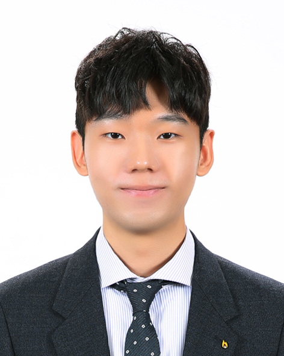

Hi! I am a Senior Research Scientist at Qualcomm AI Research. My research interests lie in computer vision and machine learning. I am interested in developing robust models that excel in real-world, uncontrolled environments through robust and scalable training techniques.
I received my Ph.D. from Seoul National University, where I was advised by Prof. Bohyung Han in the Computer Vision Lab. During my Ph.D., my research focused on federated learning and open-set recognition. I also interned at Qualcomm AI Research and NAVER Cloud.
Contact: snow1234 (at) snu (dot) ac (dot) com
News
[2026. 07]
🎓 Successfully defended my Ph.D. dissertation!
[2026. 05]
💼 Joined the Agentic AI team at Qualcomm AI Research as a Senior Research Engineer.
[2026. 05]
📃 One paper was accepted to ICML 2026! See you in Seoul. 🇰🇷
[2026. 03]
💼 Started a research internship with the Agentic AI team at Qualcomm AI Research.
[2026. 02]
💼 Completed my five-month Visiting Research Scientist role at NAVER Cloud, developing RL-based post-training algorithms for large-scale VLMs in HyperCLOVA X Vision.
[2025. 10]
💼 Joined NAVER Cloud as a Visiting Research Scientist.
[2025. 09]
📃 One paper on federated learning was accepted to NeurIPS 2025.
[2024. 03]
📃 Two papers on federated learning were accepted to CVPR 2024.
[2023. 03]
📃 One paper on open-set learning was accepted to CVPR 2023.
[2022. 05]
📃 One paper on federated learning was accepted to ICML 2022.
Education
- M.S. & Ph.D. Electrical and Computer Engineering, Seoul National University (Mar. 2019 - Aug. 2026)
- Computer Vision Lab
- Advisors: Bohyung Han
- B.S. Electrical Engineering, Korea University (Mar. 2014 - Feb. 2019)
Publications
-
Score-Repellent Monte Carlo: Toward Efficient Non-Markovian Sampler with Constant Memory in General State Spaces
Jie Hu, Lingyun Chen, Geeho Kim, Jinyoung Choi, Bohyung Han, and Do Young Eun
International Conference on Machine Learning (ICML), Seoul, Korea, July 2026 (Spotlight)
-
FedLPA: Local Prior Alignment for Heterogeneous Federated Generalized Category Discovery
Geeho Kim, Jinu Lee, and Bohyung Han
Advances in Neural Information Processing Systems (NeurIPS), 2025
-
Relaxed Contrastive Learning for Federated Learning
Seonguk Seo*, Jinkyu Kim*, Geeho Kim*, and Bohyung Han
IEEE/CVF Conference on Computer Vision and Pattern Recognition (CVPR), 2024
-
Communication-Efficient Federated Learning with Accelerated Client Gradient
Geeho Kim*, Jinkyu Kim*, and Bohyung Han
IEEE/CVF Conference on Computer Vision and Pattern Recognition (CVPR), 2024
-
Open-Set Representation Learning through Combinatorial Embedding
Geeho Kim, Junoh Kang, and Bohyung Han
IEEE/CVF Conference on Computer Vision and Pattern Recognition (CVPR), 2023
-
Multi-level branched regularization for federated learning
Jinkyu Kim*, Geeho Kim*, and Bohyung Han
International Conference on Machine Learning (ICML), 2022
-
Learning to optimize domain specific normalization for domain generalization
Seonguk Seo, Yumin Suh, Dongwan Kim, Geeho Kim, and Bohyung Han
European Conference on Computer Vision (ECCV), 2020
-
Combinatorial inference against label noise
Paul Hongsuck Seo, Geeho Kim, and Bohyung Han
Advances in Neural Information Processing Systems (NeurIPS), 2019
Honors and Awards
- Qualcomm Innovations Fellowship Korea (2021)
- Best paper finalist with “Open-Set Representation Learning through Combinatorial Embedding”
- Visual Domain Adaptation Challenge (VisDA-19) (2019)
- ICCV 2019, 3rd Place Winner
Academic Services
- Regular Program Committee Member (Reviewer) in CVPR, ICCV, ECCV, NeurIPS, ICLR, ICML, TPAMI, WACV, and AAAI